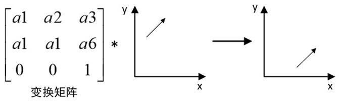
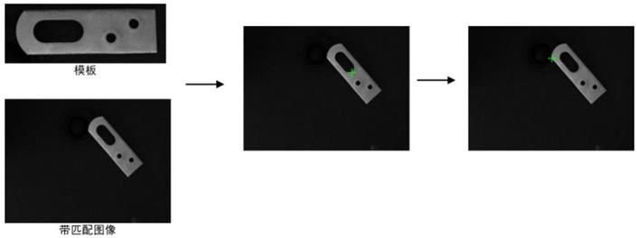

|
类型 |
变换 |
|
描述 |
对输入向量进行补正  别名：ZV_VectorCorrect |
|
语法 |
ZV_TkCorrectVector(mat,vecx,vecy,veca,tabId)
参数： mat：ZVOBJECT类型，补正的变换矩阵，矩阵为2*3或者3*3 vecx：输入向量的起始x坐标 vecy：输入向量的起始y坐标 veca：输入向量的角度，顺时针为正 tabId：TABLE索引，输出参数，补正后的向量参数,依次为x、y、angle |
|
适用控制器 |
支持ZV功能或者5系列以上的控制器 |
|
例子 |
 ' 创建模板 ZVOBJECT model_img,model,re ZV_ImgRead(model_img,"tool6.jpg", 0) '读取模版 ZV_McCreateShape(model_img,re,model,-180,360,0,0,0,0) '创建模板
' 形状匹配 ZVOBJECT img,result ZV_ImgRead(img,"tool5.png", 0) '读取图片 ZV_McFindShape(model,img,result,90,1,0.6,-1,3,9,0) '模板匹配 ZV_MatGetRow(result,0,5,0) '获取第一个匹配结果
' 结果补正 TABLE(10,1,0,-95,0,1,-55) '将数据存入到TABLE(0)中 ZV_MatGenData(mat,2,3,10) '构建变换矩阵 ZV_TkCorrectVector(mat,TABLE(1),TABLE(2),TABLE(3),20) '使用变换矩阵对匹配结果进行补正
' 绘制结果 ZVOBJECT img_dst ZV_ImpGrayToRgb(img,img_dst) '灰度图转化为RGB图像 ZV_DraMarker(img_dst,TABLE(1),TABLE(2),0,30,ZV_DraColor(255,0,0)) '绘制补正前标记(红) ZV_DraMarker(img_dst,TABLE(20),TABLE(21),0,30,ZV_DraColor(0,255,0)) '绘制补正后标记(绿) |